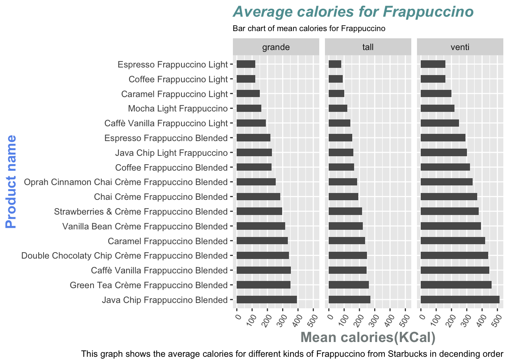

Example analysis
Questions:
What are the average calorie content for Frappuccino of different sizes, and how sugar or fat content related to the calories in Frappuccino? How much caffeine is contained in each Frappuccino beverage?
Intended Audience:
Those who drink Starbucks everyday, especially those who loves Frappuccino, and who are interested in the nutrition content in Frappuccino. As many kinds of Frappuccino are listed “unhealthy” drink in Starbucks (Staff, n.d.), it is important to know the nutrition fact of Frappuccino.
Original data:
The original data is from Official Starbucks Nutritional dataset from the pdf Starbucks Coffee Company Beverage Nutrition Information. The dataset used here is from TidyTuesday, December 21, 2021. (https://raw.githubusercontent.com/rfordatascience/tidytuesday/master/data/2021/2021-12-21/starbucks.csv)
Data dictionary:
https://github.com/rfordatascience/tidytuesday/tree/master/data/2021/2021-12-21
library(here)here() starts at /Users/chunyanzheng/Desktop/R_programming/Chunyan Zhenglibrary(tidyverse)── Attaching packages
───────────────────────────────────────
tidyverse 1.3.2 ──✔ ggplot2 3.3.6 ✔ purrr 0.3.4
✔ tibble 3.1.8 ✔ dplyr 1.0.9
✔ tidyr 1.2.0 ✔ stringr 1.4.1
✔ readr 2.1.2 ✔ forcats 0.5.2
── Conflicts ────────────────────────────────────────── tidyverse_conflicts() ──
✖ dplyr::filter() masks stats::filter()
✖ dplyr::lag() masks stats::lag()if(!dir.exists(here("data"))) { dir.create(here("data")) }
if(!file.exists(here("data","starbucks.RDS"))) {
csv <- 'https://raw.githubusercontent.com/rfordatascience/tidytuesday/master/data/2021/2021-12-21/starbucks.csv'
starbucks <- readr::read_csv(csv)
# save the file to RDS objects
saveRDS(starbucks, file= here("data","starbucks.RDS"))
}
starbucks <- readRDS(here("data","starbucks.RDS"))mean_cl<-starbucks%>%filter(grepl('Frappuccino', product_name))%>%select(product_name, calories, size)%>%group_by(product_name,size)%>%summarise(average_calories=mean(calories))`summarise()` has grouped output by 'product_name'. You can override using the
`.groups` argument.mean_cl# A tibble: 51 × 3
# Groups: product_name [17]
product_name size average_calories
<chr> <chr> <dbl>
1 Caffè Vanilla Frappuccino Blended grande 354
2 Caffè Vanilla Frappuccino Blended tall 247
3 Caffè Vanilla Frappuccino Blended venti 446
4 Caffè Vanilla Frappuccino Light grande 190
5 Caffè Vanilla Frappuccino Light tall 140
6 Caffè Vanilla Frappuccino Light venti 250
7 Caramel Frappuccino Blended grande 334
8 Caramel Frappuccino Blended tall 237
9 Caramel Frappuccino Blended venti 420
10 Caramel Frappuccino Light grande 150
# … with 41 more rowsggplot(mean_cl, aes(x=average_calories,
y=reorder(product_name, -average_calories)))+
geom_col(width=0.5)+
facet_grid(.~size)+
labs(title = "Average calories for Frappuccino",
subtitle = "Bar chart of mean calories for Frappuccino",
caption="This graph shows the average calories for different kinds of Frappuccino from Starbucks in decending order")+
ylab("Product name") + xlab("Mean calories(KCal)")+
theme(axis.text.x = element_text(angle = 60, hjust=1, size =8),
plot.title = element_text(color="cadetblue", size=15, face="bold.italic"),
plot.subtitle=element_text(size=8,color="black"),
axis.title.x = element_text(color="azure4", size=14, face="bold"),
axis.title.y = element_text(color="cornflowerblue", size=14, face="bold"))
Note
It is also important to learn about whether it is sugar or fat contribute more to calories in Frappuccino.
Calorie count: sugar has 4 calories/g and fat has 9 calories/g (“Nutrient Calorie Count - Global - Making Sense of Sugar,” n.d.).
cl_sugar_fat<-starbucks%>%filter(grepl('Frappuccino', product_name))%>%select(product_name, calories, sugar_g, total_fat_g)%>%group_by(product_name)%>%summarise(average_calories=mean(calories), average_sugar=mean(sugar_g), average_fat=mean(total_fat_g))
cl_sugar_fat# A tibble: 17 × 4
product_name average_cal…¹ avera…² avera…³
<chr> <dbl> <dbl> <dbl>
1 Caffè Vanilla Frappuccino Blended 349 66.6 7.01
2 Caffè Vanilla Frappuccino Light 193. 42 0.133
3 Caramel Frappuccino Blended 330. 61.7 7.43
4 Caramel Frappuccino Light 150 32.7 0.1
5 Chai Crème Frappuccino Blended 282. 48.1 7.65
6 Coffee Frappuccino Blended 238 50.9 2.02
7 Coffee Frappuccino Light 123. 26 0.1
8 Double Chocolaty Chip Crème Frappuccino Blended 343 50.4 11.8
9 Espresso Frappuccino Blended 221. 47.5 1.48
10 Espresso Frappuccino Light 120 24.7 0.0667
11 Green Tea Crème Frappuccino Blended 358. 64.9 8.01
12 Java Chip Frappuccino Blended 393. 64.8 11.1
13 Java Chip Light Frappuccino 230 39.3 4
14 Mocha Light Frappuccino 167. 31.7 0.833
15 Oprah Cinnamon Chai Crème Frappuccino Blended 260. 43.0 7.36
16 Strawberries & Crème Frappuccino Blended 297. 52.2 7.43
17 Vanilla Bean Crème Frappuccino Blended 310 54.3 7.71
# … with abbreviated variable names ¹average_calories, ²average_sugar,
# ³average_fatcolors <- c("Fat" = "steelblue", "Sugar" = "red")
ggplot(cl_sugar_fat, aes(x=average_calories))+
geom_line(aes(y = average_sugar, color = "Sugar")) +
geom_line(aes(y = average_fat, color="Fat"))+
labs(title = "Line chart of average sugar/fat over calories",
subtitle = "this graph shows how average sugar/fat is related to calories",
caption="The graph shows that average sugar content is more related to average calorie change",
x = "Average calories(KCal)",
y = "Average nutrient(g)",
color = "Legend")+
theme(
plot.title = element_text(color="cadetblue", size=15, face="bold.italic"),
plot.subtitle=element_text(size=8,color="black"),
axis.title.x = element_text(color="azure4", size=14, face="bold"),
axis.title.y = element_text(color="cornflowerblue", size=14, face="bold"),
axis.text = element_text(size =10))+
scale_color_manual(values = colors)
Tip
Manually added legend for different nutrient groups here
mean_cf<-starbucks%>%filter(grepl('Frappuccino', product_name))%>%select(product_name, caffeine_mg)%>%group_by(product_name)%>%summarise(average_caffeine=mean(caffeine_mg))%>%arrange(average_caffeine)
head(mean_cf,n=5)# A tibble: 5 × 2
product_name average_caffeine
<chr> <dbl>
1 Strawberries & Crème Frappuccino Blended 0
2 Vanilla Bean Crème Frappuccino Blended 0
3 Double Chocolaty Chip Crème Frappuccino Blended 15
4 Oprah Cinnamon Chai Crème Frappuccino Blended 28.3
5 Chai Crème Frappuccino Blended 34.8tail(mean_cf, n=5)# A tibble: 5 × 2
product_name average_caffeine
<chr> <dbl>
1 Caramel Frappuccino Blended 100
2 Java Chip Light Frappuccino 108.
3 Java Chip Frappuccino Blended 110
4 Espresso Frappuccino Light 143.
5 Espresso Frappuccino Blended 157.ggplot(mean_cf, aes(y=reorder(product_name, -average_caffeine),
x=average_caffeine))+
geom_point()+
labs(title = "Scatter Plot of average caffeine",
subtitle = "the graph shows mean caffeine in different Frappuccino of Starbucks",
caption="the average caffeine content is shown in descending order")+
xlab("Average caffeine (mg)") + ylab("Product name")+
theme(
plot.title = element_text(color="cadetblue", size=15, face="bold.italic"),
plot.subtitle=element_text(size=8,color="black"),
axis.title.x = element_text(color="azure4", size=14, face="bold"),
axis.title.y = element_text(color="cornflowerblue", size=14, face="bold"),
axis.text = element_text(size =10))Use average caffeine here but not separated by size because all Frappuccino have three size types: grande, tall. venti
Summary
From the analysis above, we can see that Frappuccino light has lower calories than Frappuccino blended, and Java Chip Frappuccino Blended has the highest calorie content. Therefore, for those people love Frappuccino but want to have less calories intake, they should choose Frappuccino Light instead of Frappuccino Blended. From the line chart compare sugar and fat over calories, we can see that change of sugar content affect the calories more than fat. Last but not least, Vanilla Bean Cream Frappuccino Blended and Strawberry & Creme Frappuccino Blended have 0 caffeine and Espresso Frappuccino (both light and blended) has the highest caffeine content.
Function used
-‘dplyr’: ‘group_by()’, ‘summarise()’, ‘filter()’, ‘select()’, ‘arrange()’
-‘ggplot2’: ‘geom_point()’, ‘geom_line()’, ‘geom_col()’ ‘facet_grid()’
References
Behance. n.d. “Starbucks Menu | Infographic Design.” Behance. https://www.behance.net/gallery/58743971/Starbucks-Menu-Infographic-Design.
“Nutrient Calorie Count - Global - Making Sense of Sugar.” n.d. Global. https://makingsenseofsugar.com/balanced-diet/calorie-count/.
Staff, The Daily Meal. n.d. “The 20 Healthiest and Unhealthiest Drinks You Can Order at Starbucks.” Insider. https://www.insider.com/the-healthiest-and-unhealthiest-drinks-you-can-order-at-starbucks-2018-5.